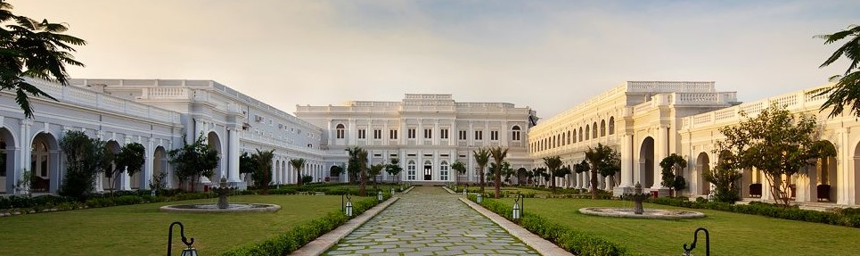
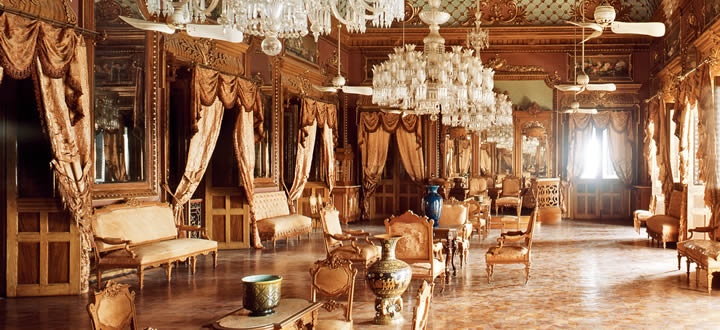
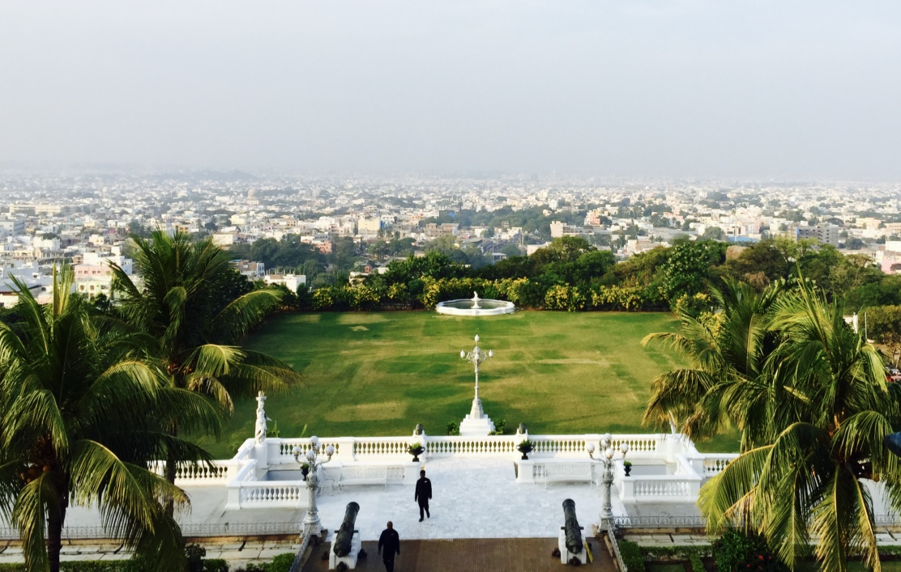

To Search for Holiday Ideas, Plan Your Trip and more.
WELCOME TO ANDHRA

Falaknuma Palace
Falaknuma is a palace in Hyderabad, Telangana, India. It belonged to the Paigah family, and it was later owned by the Nizam of Hyderabad. It is on a 32-acre (13 ha) area in Falaknuma, 5 km from Charminar. It was built by Nawab Vikar-ul-Umra, prime minister of Hyderabad and the uncle and brother-in-law of the Nizam VI, Nawab Mir Mahboob Ali Khan Bahadur.Falak-numa means "Like the Sky" or "Mirror of the Sky" in Urdu.

One of the highlights of the palace is the state reception room, where the ceiling is decorated with frescoes and gilded reliefs. The ballroom contains a two-ton manually operated organ said to be the only one of its kind in the world.
The palace has 60 lavishly decorated rooms and 22 spacious halls. It has some of the finest collections of the [4] treasure. Falaknuma houses a large collection of rare treasures including paintings, statues, furniture, manuscripts and books.
The jade collection at the palace is considered to be unique in the world.
The dining hall
The famed dining hall can seat 101 guests at its table, considered to be the largest in the world. The chairs are made of carved rosewood with green leather upholstery. The tableware was made of gold and crystal to which fluted music was added. The length of the table is 108 feet, and breadth is 5.7 feet and height is 2.7 feet.
The palace has a library with a carved walnut roof: a replica of the one at Windsor Castle. The library had one of the finest collections of the Quran in India.

In 2000, Taj Hotels started renovating and restoring the palace.[6] The renovated hotel was opened in November 2010.[7] The rooms and halls were decorated with ornate furniture, handcrafted tapestries and brocade from France. The interiors have English and Venetian chandeliers and intricate frescos, and have outdoor terraces with rare artefacts, including paintings, statues, furniture, manuscripts and books. The palace has a 101-seat dining hall, considered the largest in the world, and the Durbar Hall, embellished with intricately carved wooden ceilings, parquet flooring, walnut furniture and handcrafted mirrors.[8]